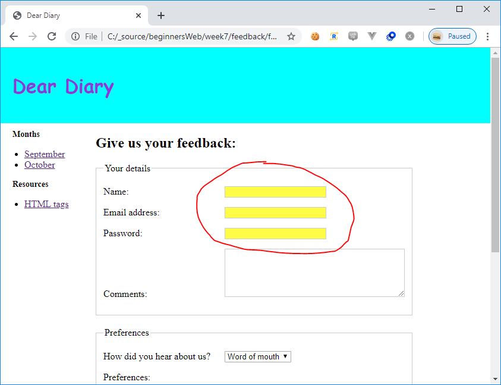

Monday November 18th 2019
Today we learned about JavaScript.
JavaScript is a programming language that can be used to add enhanced interactivity to webpages.
It can be used to handle user events (key presses, mouse clicks etc) and change what is being displayed on the page in response to those events, or navigate to new pages if required.
JavaScript is ideal for manipulating the data that lies behind the webpage to give the user a richer experience, or to give the webpage owner better understanding of user behaviour through analytics.
There are a few basic variable types:
- Numbers - integers (whole numbers - 1, 2 etc) and decimals (2.5)
- Strings - characters that can be used to make up words
- Boolean - true or false
- Arrays - collection of variables, for example [1, 2, 4, "six", true]
- Objects - collection of items arranged into key/value pairs:
{
name: "Simon",
job: "Developer"
}
We also learned about declaring and working with variables, with mathematical operations and string concatenation.
We were introduced to the idea of functions, and how they can be used to execute some logic on a variable/variables:
function doSomething() {
alert("Doing something");
}
We also saw that we can use conditional statements to check the state of variables before executing sections of code.
if (userPressesButtonA) {
doFunctionA();
} else {
doFunctionB();
}
We discussed how we can iterate through loops to execute the same action on collections of data.
for (i = 0; i < yourArray.length; i++;) {
doSomeAction(yourArray[i])
}
We learned about the Document Object Model (DOM) - the way in which the browser represents the HTML page in its memory.
The DOM allows us to access the elements on the page as JavaScript objects and allows us to interact with them with the code.
We can also use JavaScript to manipulate DOM objects. For example, we can set the background colour of the name field in our form to yellow:
var inputName = document.getElementById("name");
inputName.style = "background-color: yellow;";
We can also use JavaScript to get information from the DOM. For example, we can retrieve the value entered in the name field of our form:
var inputName = document.getElementById("name");
var getTheNameFromTheForm = inputName.value;
In our website project, we learned about using JavaScript to interact with our feedback form to give basic form validation:
